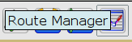
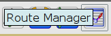
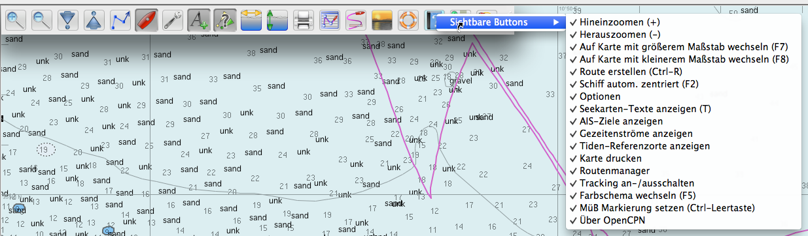
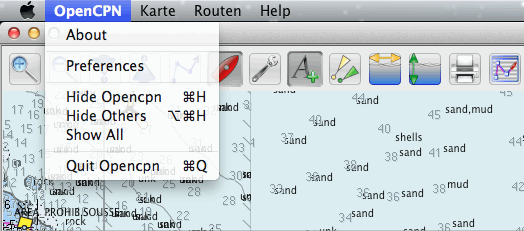
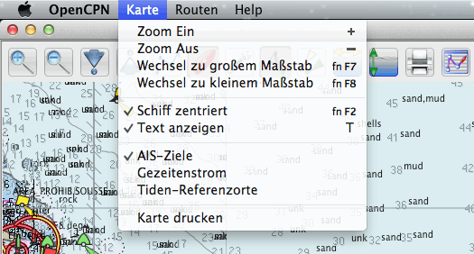
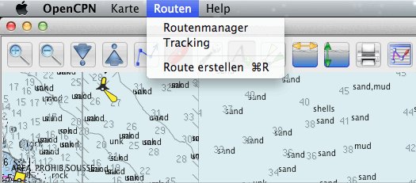
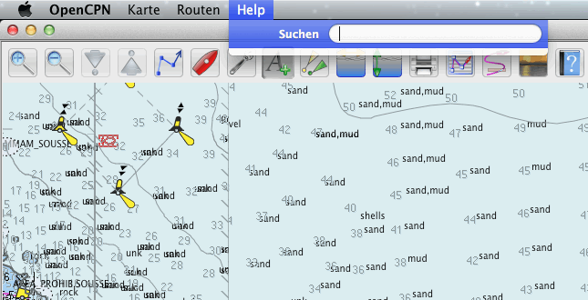
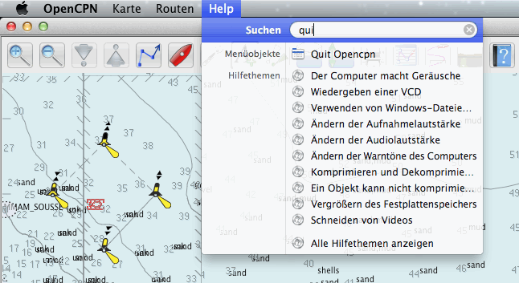

Werkzeugleiste Buttons
Die Werkzeugleiste ist schiebbar und kann überall vertikal oder horizontal auf dem Bildschirm plaziert werden. Benutzen Sie dazu das "Anfassen"-Symbol
ganz rechts auf der Werkzeugleiste, um sie dorthin zu schieben, wo Sie wollen. Die Grundposition ist horizontal und oben links angedockt. Sie schnappt an den
Ecken. Rechts-Klick auf das "Anfassen"-Symbol wechselt zum verikalen Format. Ist in den Einstellungen die Werkzeugleiste als transparent konfiguriert, wird sie aktiv,
wenn der Mauscursor darüber wandert. Einige Symbole fungieren als Schalter. Das Symbol "A" oben für Textanzeige ist z.B. aktiviert und hat sein Aussehen
verändert (Rand und grau). Beim Tracking-Symbol ändert sich auch die Farbe des Balkens bei Aus oder bei Ein
 . Eine kurze Beschreibung wird beim Wandern des Mauszeigers über das jeweilige Symbol angezeigt .
. Eine kurze Beschreibung wird beim Wandern des Mauszeigers über das jeweilige Symbol angezeigt .
Weitere Symbole können hinzu kommen, wenn weitere Plugins verfügbar bzw. aktiviert sind.
Außer der obigen tradionellen Ansicht der Werkzeugleiste kann das Aussehen in den Einstellungen (Optionen) unter dem Punkt "Oberfläche" bei "Symbolleiste
und Fenster-Stil" wie unten verändert werden in:
Journeyman
Journeyman Flat
Eine weitere Neuerung ab OpenCPN 3.2 ist das Kontextmenü mit der rechten Maustaste auf die Werkzeugleiste, mit dem die Symbole versteckt werden können. Es muß jedoch ein
Symbol bleiben, da die Werkzeugleiste sonst nicht mehr erreichbar ist. Zudem gibt es z.B. eine Warnmeldung, wenn man das MüB-Symbol verstecken will. Zum Verstecken eines Symbols
wird der Haken links deaktiviert.

Die Symbole von links nach rechts:
 Zoom Ein (Mehr Infos)
Zoom Ein (Mehr Infos)
 Zoom Aus (Mehr Infos)
Zoom Aus (Mehr Infos)
Skalierung nächste Karte runter 1) (Mehr Infos)
Skalierung nächste Karte hoch 1) (Mehr Infos)
 Erzeuge Route (Mehr Infos)
Erzeuge Route (Mehr Infos)
Finde/Folge Boot (Mehr Infos)
 Starte Einstellungen (Mehr Infos)
Starte Einstellungen (Mehr Infos)
 Zeige Vektor Text Begriffe auf Vektor Karten.
Zeige Vektor Text Begriffe auf Vektor Karten.
Zeige AIS Ziele 2) (Mehr Infos)
Zeige/Verstecke Strömungen auf der Karte (Mehr Infos)
Zeige/Verstecke Tiden auf der Karte (Mehr Infos)
Drucken 4)
Routen/Track/Wegpunk-Manager(Mehr Infos)
Umschaltung Track Ein/Aus 4) (Mehr Infos)
 Wechsel Farbschema (Mehr Infos)
Wechsel Farbschema (Mehr Infos)
 Mann über Bord (MüB) Markierung einfügen (Mehr Infos)
Mann über Bord (MüB) Markierung einfügen (Mehr Infos)
Über OpenCPN
 Zeigt/versteckt das Dashboard Plugin 4) (Mehr Infos)
Zeigt/versteckt das Dashboard Plugin 4) (Mehr Infos)
 Grib Überlagerung Plugin 4) (Mehr Infos)
Grib Überlagerung Plugin 4) (Mehr Infos)
Das separate GPS-Status und Karten-Orientierungs Symbol ist normalerweise in der oberen rechten Ecke, wenn die Werkzeugleiste diesen Bereich nicht besetzt. Dann wandert es automatisch nach unten links.
Kurs oben/Nord oben 3) (Mehr Infos)
 GPS Status 3) (Mehr Infos)
GPS Status 3) (Mehr Infos)
Bemerkung 1: Diese Symbole sind nicht wählbar, wenn nur CM93 Vector-Karten verfügbar sind, da es dort keinen Sinn macht.
Bemerkung 2: Der AIS Knopf ist verfügbar, wenn ein Ais Daten-Port in den Einstellungen definiert wurde.
Bemerkung 3: Diese Symbole ändern sich je nach Status. Sie befinden sich in der oberen rechten Ecke und sind nicht Teil der Werkzeugleiste.
Bemerkung 4: Diese Symbole können in den Einstellungen aktiviert oder deaktiviert werden.
Menüleiste bei Mac OS X
Nur in dieser speziellen Mac OS X Version von OpenCPN gibt es eine Menüleiste, mit deren Menüs auch die hauptsächlichen Funktionen der Werkzeugleiste erreicht werden können. Somit könnten Symbole der Werkzeugleiste - wie oben gezeigt - versteckt werden oder die Werkzeugleiste ganz versteckt werden. Denken Sie aber daran, daß es im Vollbild-Modus (Tastenkombination fn-⌘-F11) keine Menüleiste gibt und Funktionen dann nur über die Werkzeugleiste oder Tastenkombinationen erreichbar sind. Die Werkzeugleiste sollte also erhalten bleiben.
In einem ersten Entwurf dieser speziellen Mac OS X Version (nur ab OS X Lion 10.7 oder höher) gibt es folgende Menüs:





In einem nächsten Schritt wird daran gedacht, die bisherige Betriebssystem-übergreifende und daher mit HTML gemachte OpenCPN-Hilfe in das
spezielle Mac OS X Hilfesystem zu überführen, so daß hier nur noch OpenCPN-spezifische Themen erscheinen.
Wenn Sie diese Hilfe lesen, ist das bereits geschehen.